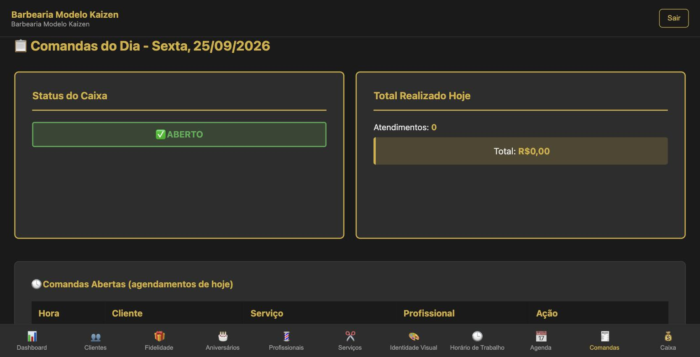
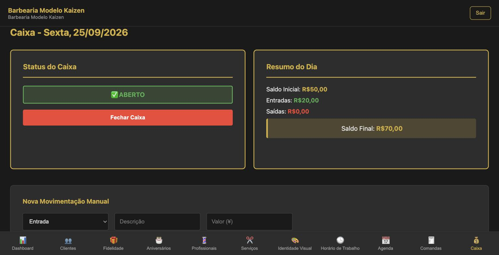

Todo atendimento passa por dois lugares: a Agenda, para saber quem vem e quando, e a Comanda, para fechar o que foi feito e o valor entrar no Caixa. Este manual ensina a equipe a fazer as duas coisas sozinha, sem chamar o dono a cada dúvida.
Seu acesso
O dono convida cada profissional pela aba Profissionais: digita o e-mail na linha da pessoa e clica em Convidar. Você recebe um e-mail para criar sua senha e entra no painel com ele.
| Quem entra | O que vê no painel |
|---|---|
| Profissional (login por convite) | Agenda, Comandas e Minha Comissão |
| Dono | Tudo: Dashboard, Clientes, Caixa, Serviços, Horários, Identidade Visual e o resto |
Se aparecer "Seu login ainda não está ligado a um cadastro de profissional", avise o dono: o convite precisa sair da linha com o seu nome.
O dia em 4 momentos
- Abrir o caixa (dono) — sem caixa aberto, ninguém consegue fechar comanda.
- Consultar a Agenda (todos) — quem vem, a que horas, com quem.
- Fechar a comanda de cada atendimento (todos) — logo que o cliente levanta da cadeira.
- Conferir e fechar o caixa (dono) — no fim do expediente.
Agenda
A Agenda mostra um profissional por vez: toque na bolinha com as iniciais dele no topo. Abaixo, escolha o dia e a visualização: Dia, Semana, Mês, Lista ou Bloqueios.
| Quero… | Como fazer |
|---|---|
| Marcar um cliente que ligou ou chegou sem horário | Toque num horário vazio, ou no botão + no canto da tela |
| Encaixar alguém num horário já ocupado | No formulário, ative o Modo Encaixe e confirme o aviso de conflito |
| Travar um horário (médico, folga, feriado) | Toque num horário vazio e escolha Bloquear horário; para o dia todo, marque "Fechar o dia todo" |
| Ver os detalhes de um atendimento | Toque no card: dá para mudar o status, anotar observações e ver o histórico do cliente |
| Lembrar o cliente | No card, Enviar Lembrete por WhatsApp |
| Mudar dia ou horário | No card, edite e salve: cliente e profissional recebem um e-mail avisando |
| Cancelar | No card, Cancelar Agendamento, diga quem cancelou e o motivo. O horário volta a ficar livre na hora |
| Marcar falta | Mude o status para Ausente |
O motivo do cancelamento é obrigatório. Ele fica registrado no histórico e ajuda o dono a identificar quem cancela em cima da hora com frequência.
Comandas
A comanda é o que transforma um agendamento em dinheiro no Caixa. Feche cada uma assim que o cliente levantar da cadeira.

Fechar um atendimento agendado
- Em Comandas Abertas, ache o cliente pela hora.
- Toque em Fechar.
- Confira o valor final sugerido — ajuste se o cliente pediu algo a mais ou a menos — e confirme.
Pronto: um aviso confirma, e o atendimento vai para Serviços Realizados e para o Caixa do dia.
Quando o cliente agendou no mesmo dia do atendimento, a lista mostra um selo de desconto de 15% por recorrência e o valor sugerido já vem com o desconto aplicado.
Lançar um atendimento sem agendamento (cliente que chegou na hora): use Lançar Atendimento Avulso, escolha serviço e profissional e toque em Adicionar Serviço. Só funciona no dia de hoje.
Ver outro dia: use "Ver comandas de:" para consultar uma data anterior e Voltar para hoje para retornar.
Caixa — tarefa do dono
O login de profissional não vê o Caixa. Abrir e fechar o caixa é responsabilidade do dono, ou de quem usa o login dele.

- Abrir: no começo do dia, informe o saldo inicial (o dinheiro na gaveta) e toque em Abrir Caixa.
- Durante o dia: as comandas fechadas entram sozinhas. Para o que não é atendimento — troco, compra de material, sangria — use Nova Movimentação Manual: Entrada ou Saída, descrição e valor.
- Conferir: o Resumo do Dia mostra saldo inicial, entradas, saídas e saldo final. Compare com a gaveta.
- Fechar: toque em Fechar Caixa. Depois disso, novas comandas do dia só fecham se o caixa for reaberto.
Nos planos Intermediário e Completo, o Caixa mostra também o Histórico de Dias (últimos 90 dias), o Movimento do Mês e a Comissão por Profissional. No plano Básico, esses três aparecem com cadeado — não é erro.
Minha Comissão
Cada profissional acompanha o que tem a receber, sem perguntar ao dono. A aba mostra dois blocos:
| Bloco | O que mostra |
|---|---|
| Semana atual | Faturado na semana, seu percentual de comissão e a comissão devida |
| Mês selecionado | Faturado e comissão devida no mês escolhido |
O percentual é o que o dono cadastrou na aba Profissionais. Só entra no cálculo o que passou por comanda fechada ou atendimento avulso — mais um motivo para nunca esquecer de fechar.
No plano Básico esta aba aparece com cadeado: ela faz parte dos planos Intermediário e Completo.
Deu problema?
| O que aparece | Por quê | O que fazer |
|---|---|---|
| "O caixa de hoje ainda não foi aberto" ao fechar comanda | O dono ainda não abriu o caixa | Peça ao dono para abrir o caixa na aba Caixa |
| O Caixa não bate no fim do dia | Alguma comanda ficou aberta | Confira Comandas Abertas e feche o que faltou |
| "Nenhum horário livre nesse dia" | Agenda cheia, bloqueio ou folga | Escolha outro dia, ou use o Modo Encaixe |
| "Esse horário não está mais disponível" | Alguém agendou antes, pelo site | Escolha outro horário na lista |
| Lançamento avulso não funciona | A tela está mostrando outro dia | Toque em Voltar para hoje |
| Valor errado numa comanda já fechada | Comanda fechada não reabre | O dono corrige no Caixa |
| "Seu login ainda não está ligado a um cadastro de profissional" | O convite não foi feito pela sua linha | O dono reenvia o convite na aba Profissionais |
| Minha Comissão com cadeado | Plano Básico | Recurso dos planos Intermediário e Completo |
Kaizen Flow · Bônus 2 — Manual de Bolso da Equipe · Material exclusivo para assinantes.